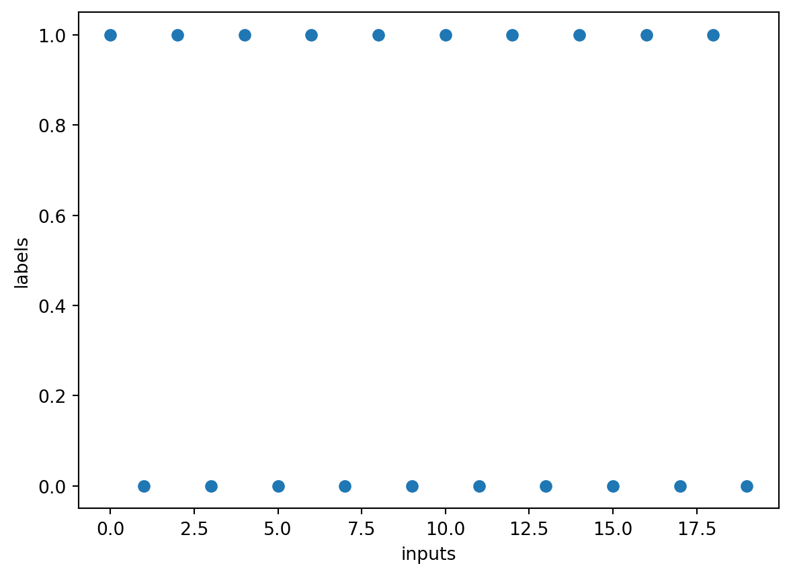

import torch
from torch.utils.data import Dataset, DataLoaderTo work with custom datasets in PyTorch, we need to create a custom dataset class and then use a data loader to load the data in mini-batches during training or evaluation. In this tutorial, we will create a custom randomly generated dataset and load it using a data loader.
First, let’s install the necessary packages and import the required libraries:
Next, we will create a custom dataset class by subclassing the Dataset class provided by PyTorch. In this example, let’s create a dataset of randomly generated 2D points with corresponding labels:
class CustomDataset(Dataset):
def __init__(self, num_samples):
self.num_samples = num_samples
# data is from 0 to num_samples-1
self.data = torch.arange(num_samples)
self.labels = (self.data%2==0).long()
def __len__(self):
return self.num_samples
def __getitem__(self, idx):
sample = self.data[idx]
label = self.labels[idx]
return sample, labelIn the __init__ method of our CustomDataset class, we initialize the number of samples and number of features. We then generate random data points and labels using the torch.randn and torch.randint functions, respectively.
The __len__ method is used to return the total number of samples in the dataset.
The __getitem__ method is used to access a particular sample and its label given an index. We retrieve the corresponding data point and label from the pre-generated data and labels tensors, and return them as a tuple.
Now, let’s create an instance of our custom dataset:
dataset = CustomDataset(num_samples=20)
print(dataset[0])
print(dataset[1])(tensor(0), tensor(1))
(tensor(1), tensor(0))Let’s visualize the dataset.
import matplotlib.pyplot as plt
plt.scatter(dataset.data, dataset.labels)
plt.xlabel('inputs')
plt.ylabel('labels')Text(0, 0.5, 'labels')
We have created a dataset with 20 samples.
Finally, we can create a data loader to load our custom dataset in mini-batches:
dataloader = DataLoader(dataset, batch_size=8, shuffle=False, drop_last=False)The DataLoader class takes our custom dataset as input along with the desired batch size.
for batch in dataloader:
inputs, labels = batch
print(f'inputs: {inputs}')
print(f'labels: {labels}\n')inputs: tensor([0, 1, 2, 3, 4, 5, 6, 7])
labels: tensor([1, 0, 1, 0, 1, 0, 1, 0])
inputs: tensor([ 8, 9, 10, 11, 12, 13, 14, 15])
labels: tensor([1, 0, 1, 0, 1, 0, 1, 0])
inputs: tensor([16, 17, 18, 19])
labels: tensor([1, 0, 1, 0])
In each iteration, the data loader returns a batch of samples, where inputs contains the features of the samples and labels contains their corresponding labels. We can now perform any required operations on the mini-batch, such as passing it through a model for training or evaluation.
You can see that by default, the Dataloader class returns the dataset in mini-batches without changing the order of the data.
We can set the shuffle parameter to True if we want to shuffle the data before each epoch. Suffling the training data can prevent the model from relying on the order of the data points to predict the labels.
dataloader = DataLoader(dataset, batch_size=8, shuffle=True, drop_last=False)
for batch in dataloader:
inputs, labels = batch
print(f'inputs: {inputs}')
print(f'labels: {labels}\n')inputs: tensor([15, 1, 5, 10, 2, 3, 8, 16])
labels: tensor([0, 0, 0, 1, 1, 0, 1, 1])
inputs: tensor([13, 7, 4, 18, 12, 6, 19, 0])
labels: tensor([0, 0, 1, 1, 1, 1, 0, 1])
inputs: tensor([17, 14, 9, 11])
labels: tensor([0, 1, 0, 0])
For specific models that rely on the batch_size to construct their parameters (see RNNs), we need to set drop_last to True to prevent batches having different shapes.
dataloader = DataLoader(dataset, batch_size=8, shuffle=True, drop_last=True)
for batch in dataloader:
inputs, labels = batch
print(f'inputs: {inputs}')
print(f'labels: {labels}\n')inputs: tensor([ 0, 19, 15, 16, 11, 17, 12, 6])
labels: tensor([1, 0, 0, 1, 0, 0, 1, 1])
inputs: tensor([14, 2, 9, 5, 4, 18, 7, 1])
labels: tensor([1, 1, 0, 0, 1, 1, 0, 0])
You can see that by setting drop_last=True, the final mini-batch of size \(4\) is dropped.
That’s it! You have learned how to create a custom dataset and load it using a data loader in PyTorch.